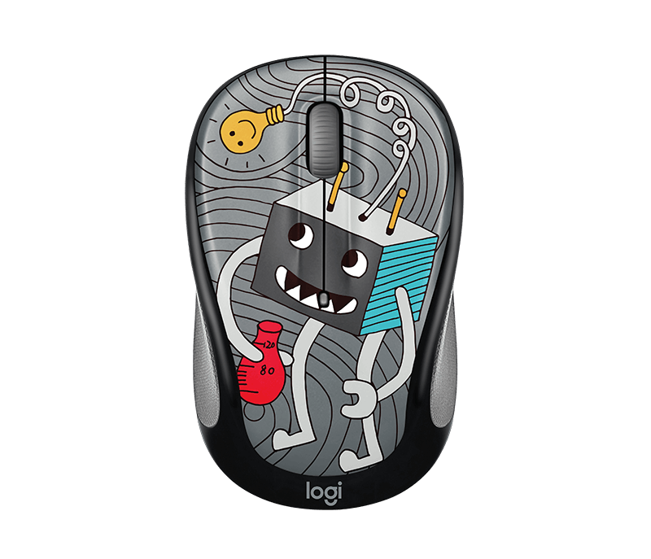

Lightbulb Mouse

KÍCH THƯỚC
Chuột (cao x rộng x dài): 95 mm x 55 m x 38 mm
Trọng lượng chuột (bao gồm pin): 84 g
Bộ thu (receiver) nano (cao x rộng x dài): 14 mm x 19 mm x 6 mm
THÔNG SỐ KỸ THUẬT
Loại kết nối
Khả năng kết nối không dây 2.4 GHz nâng cao. Kết nối truyền phát được bảo mật bởi Tiêu chuẩn Mã hóa Nâng cao 128-bit (AES).
Phạm vi không dây: 10 mét (33 feet)*
*Phạm vi không dây thực tế có thể thay đổi tùy theo điều kiện sử dụng, cài đặt và môi trường.
Kết nối / Nguồn: Có, công tắc bật/tắt
Loại pin: 1 AA
Tuổi thọ pin (không sạc được): 12 tháng*
*Tuổi thọ pin có thể thay đổi tùy theo người dùng và điều kiện sử dụng máy tính.
DPI (Tối thiểu/Tối đa): 1000 ±
Công nghệ cảm biến: Tính năng theo dõi quang học nâng cao của Logitech
Số lượng nút: 3
Bánh xe cuộn
Có, 2D, quang học
Nút tiêu chuẩn và đặc biệt
Bánh xe nghiêng có nhấp chuột ở giữa
Chuột tích hợp Unifying: Không
Đầu thu tích hợp Unifying: Không
Giao diện kết nối: Đầu thu USB